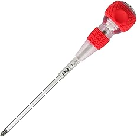
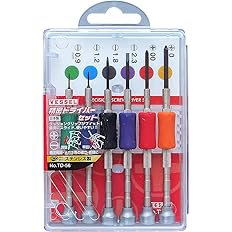

【現場で使ってる】電気工事士おすすめドライバー6選
電気工事の現場では、ドライバーは毎日使うレベルで出番が多い工具です。
プラス、マイナス、貫通、精密など、使う場面によって持っておきたい種類が変わります。
何でも1本で済ませるより、サイズや用途で使い分けた方が締めやすく、作業もしやすいです。
この記事では、自分が実際に使っているドライバーを、現場での使い方も含めてまとめています。
初心者の方や、これから工具を揃えたい人は、まず握りやすい定番から持っておくと失敗しにくいです。
※電気工事士が実際に現場で使っているドライバーを、用途別にまとめています。
迷ったら『ベッセル ボールグリップドライバー +2×100 220』でOKです
グリップ感がかなり良く、自分の中では一番しっくりくるドライバーです。
まず最初に持つ1本としても使いやすく、普段使いでかなり出番があります。
ドライバーは握りやすさで作業のしやすさがかなり変わります。
その中でも、このベッセルのボールグリップは力が入りやすく、かなり使いやすいです。
ドライバーはサイズと用途で使い分けるとかなり楽です
プラスドライバーでも、よく使うサイズと、たまに大きいサイズが必要な場面があります。
無理に合っていないサイズで回すと、ネジも工具も傷めやすくなります。
さらに固着した古いネジは貫通タイプがあると助かりますし、狭い場所や奥まったところでは精密ドライバーも便利です。
現場では1本だけより、使い分けできるとかなり安心です。
自分は普段使い、たまに出番がある大きめサイズ、固着用、精密用という感じで使い分けています。
こうしておくと、無理に1本で何とかしなくていいので作業がかなりやりやすいです。
『ベッセル ボールグリップドライバー +2×100 220』

グリップ感がかなり良く、普段使いで一番しっくりくる定番
この工具の特にいいところ
やっぱりこの形が一番しっくりきます。
グリップ感が良く、力も入れやすいので普段使いでかなり使いやすいです。
まず最初の1本を選ぶなら、このドライバーがかなり使いやすいです👇
自分が普段一番よく使うのはこのドライバーです。
しっくりくる握りやすさがあって、使っていて安心感があります。
ベッセルのボールグリップは力を入れやすく、電気工事の現場でもかなり使いやすいです。
初心者の人でも握りやすく、最初の1本としてもおすすめしやすいです。
迷ったらまずこれを持っておけば、かなり出番が多いと思います。
良かったところ
- グリップ感がかなり良い
- 力が入りやすい
- 普段使いで出番が多い
- 最初の1本としても使いやすい
『TONE パワーグリップドライバー（貫通） PGPD-003 レッド (+)No.3』

ベッセルより一つ大きいサイズで、たまに出番があると重宝する1本
この工具の特にいいところ
ベッセルより一つ大きいサイズで、たまに必要になる場面があります。
締め込み時の安心感もあり、持っておくとかなり重宝します。
たまに大きいプラスが必要になるなら、このサイズを持っておくと安心です👇
普段は+2が多いですが、たまにもう一つ大きいサイズが必要になる場面があります。
そういう時にこれがあるとかなり助かります。
締め込み時の安心感もしっかりあって、無理なく回しやすいです。
たまにしか使わなくても、持っておく価値はかなりあると思います。
こんな人におすすめ
- 大きめサイズのプラスがたまに必要な人
- 締め込み時の安心感を重視したい人
- サイズ違いも持っておきたい人
『ベッセル ボールグリップ 安全貫通ドライバー +2×150 250』

固着した古いブレーカーねじなどで出番がある貫通タイプ
この工具の特にいいところ
固着した古いブレーカーねじなどはこれが助かります。
普通のドライバーではしんどい場面でも、貫通タイプがあるとかなり安心です。
古いネジや固着したネジに備えるなら、この貫通ドライバーが便利です👇
普段使いではなくても、固着した古いネジでかなり助かる場面があります。
特に古いブレーカーねじなどでは、こういうタイプがあると安心です。
いざという時に普通のドライバーだけだと厳しいことがあるので、1本持っておくとかなり重宝します。
こんな人におすすめ
- 古い設備を触ることがある人
- 固着したネジに備えたい人
- 貫通タイプも持っておきたい人
『ベッセル ボールグリップドライバー -6×100 220』

マイナスねじでしっかり締めたい時に使いやすい定番
この工具の特にいいところ
ネジに余裕の締めつけ力があります。
マイナスが必要な場面でも、握りやすく力を入れやすいのが良いところです。
マイナスも使うなら、このサイズを持っておくとかなり使いやすいです👇
プラスだけでなく、マイナスが必要な場面もあるのでこれも持っています。
しっかり締めたい時にかなり使いやすいです。
ベッセルのボールグリップなので、マイナスでも握りやすさはかなり良いです。
1本あると対応しやすい場面が増えます。
良かったところ
- 締めつけ力に余裕がある
- マイナスでも握りやすい
- 持っておくと対応しやすい
『ベッセル 精密ドライバー6本セット TD-56』

狭い場所でも取り回ししやすく、細かい作業に便利なセット
この工具の特にいいところ
狭い場所でも取り回ししやすく使いやすいです。
細かい作業をするなら、こういう精密ドライバーがあるとかなり助かります。
細かい作業用のドライバーを揃えるなら、このセットがかなり使いやすいです👇
普通のドライバーではやりにくい、狭い場所や小さいネジで使いやすいセットです。
電気関係でも細かいところを触る時に便利です。
こういう精密ドライバーがあるだけで、無理に大きいドライバーを使わなくてよくなるので作業がかなり楽になります。
こんな人におすすめ
- 狭い場所の作業がある人
- 小さいネジを触ることがある人
- 精密ドライバーも揃えておきたい人
『ベッセル マイクロドライバーセット 3本組 9903』

上の精密ドライバーでは届かない奥まったところに便利
この工具の特にいいところ
上の精密ドライバーでは届かない奥まったところに便利です。
持っておくと、あと少し届かない場面でかなり助かります。
奥まったところまで届く精密系が欲しいなら、このセットがかなり便利です👇
普通の精密ドライバーでは届かないような場所で使いやすいです。
こういう届くかどうかの差で助かることがあります。
たまにしか使わなくても、必要な時にはしっかり役立つタイプです。
精密系を少し広げて持っておきたい人にはかなり向いています。
こんな人におすすめ
- 奥まった場所の作業がある人
- 届く精密ドライバーが欲しい人
- 精密系も使い分けたい人
どれをどう使う？
サイズや用途で分けて持っておくと、現場でかなりやりやすくなります。
| 機種 | 向いている用途 | 特徴 |
|---|---|---|
| 『+2×100 220』 | 普段使い全般 | グリップ感が良く、一番しっくりくる定番 |
| 『PGPD-003』 | たまに大きいサイズが必要な時 | 締め込み時の安心感がある |
| 『+2×150 250』 | 固着した古いネジ | 貫通タイプで助かる場面がある |
| 『-6×100 220』 | マイナスねじ全般 | 締めつけ力に余裕がある |
| 『TD-56』 | 狭い場所・小さいネジ | 精密作業で使いやすい |
| 『9903』 | 奥まった場所の精密作業 | 届かない場面で便利 |
まず最初の1本なら『ベッセル ボールグリップドライバー +2×100 220』がかなり使いやすいです。
そこから必要に応じて、貫通、マイナス、精密系を足していくと現場でかなりやりやすくなります。
まず揃えるならどうする？
最初は全部を一気に揃えなくても大丈夫です。
まずは普段使いしやすいプラス1本と、必要ならマイナス1本を持っておくとかなり対応しやすいです。
そのあとで、古い設備を触ることが多いなら貫通、細かい作業があるなら精密系を追加していく形が分かりやすいです。
迷ったらこの1本からでかなり使いやすいです
まずは『ベッセル ボールグリップドライバー +2×100 220』を持っておけば、普段使いでかなり出番があります。
グリップ感も良く、最初の1本としてかなりしっくりきやすいと思います。
▶ まずは『+2×100 220』をAmazonでチェックする 普段使いで一番しっくりくる1本次に合わせて見たい工具


他の工具もまとめてチェック
このページ以外にも、現場で使っている工具を用途別にまとめています。
まとめてチェックしたい方はこちら。
※当サイトはAmazonアソシエイト・プログラムに参加しており、適格販売により収入を得ています。